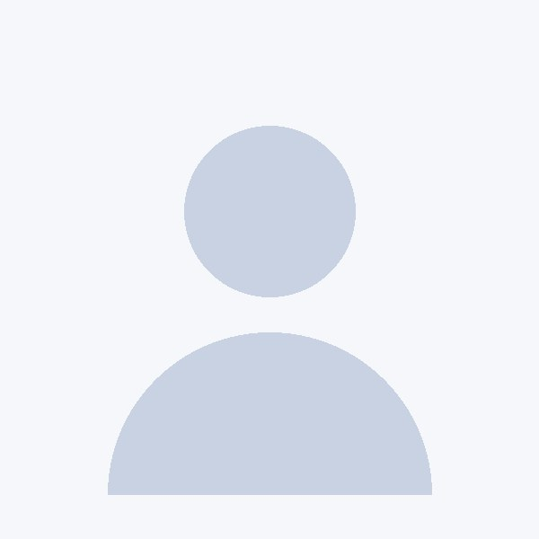

기계요소설계
3-1
- 배운 것
- 체결 요소, 공차와 끼워맞춤
- 만든 것
- 스마트 화분 연결부 설계에 적용

설계한 것을 직접 만들어 보며 배우는 기계공학도입니다. 캡스톤디자인에서 자동 급수 화분의 본체를 설계하면서, 시제품에서 생긴 누수 문제를 연결부 구조를 바꿔 가며 세 차례 다시 출력해 해결했습니다. 실험과 설계 과정을 기록으로 남겨 팀이 같은 실수를 반복하지 않게 하는 것을 중요하게 생각합니다.
과목마다 무엇을 배웠고, 그 지식으로 무엇을 만들어 봤는지 정리했습니다.
실제로 사용해 본 도구만, 어떤 과제에서 썼는지와 함께 적었습니다.
고등학교 때 고장 난 선풍기를 분해해 고쳐 본 뒤, 움직이는 구조를 직접 설계해 보고 싶어 기계공학을 선택했습니다. 지금은 설계와 시제품 제작을 함께 하는 과목에서 가장 많이 배우고 있습니다.
캡스톤 스마트 화분에서 물탱크와 본체 연결부에 물이 새는 문제가 가장 어려웠습니다. 물을 채워 하루 동안 두는 방식으로 누수 위치를 찾았고, 연결부를 패킹을 끼우는 구조로 바꿔 세 차례 다시 출력하며 해결했습니다.
설계 담당과 기록 담당을 함께 맡는 경우가 많았습니다. 캡스톤에서는 기구 설계와 함께 주간 회의록을 정리해, 일정이 늦어질 것 같은 부분을 팀에 미리 알렸습니다.
SolidWorks로 부품 모델링과 조립을 할 수 있고, 3D 프린터로 시제품을 출력해 본 경험이 있습니다. 실험 데이터는 Excel로 정리합니다. 아두이노는 센서 값을 읽고 간단한 구동을 테스트하는 수준입니다.
제품의 기구를 설계하고 시제품으로 검증하는 기구 설계 엔지니어를 목표로 하고 있습니다. 이를 위해 이번 학기에는 공차 해석과 사출 성형 설계 기준을 공부하고 있습니다.
프로젝트나 인턴십 관련 문의는 이메일로 연락 주세요.